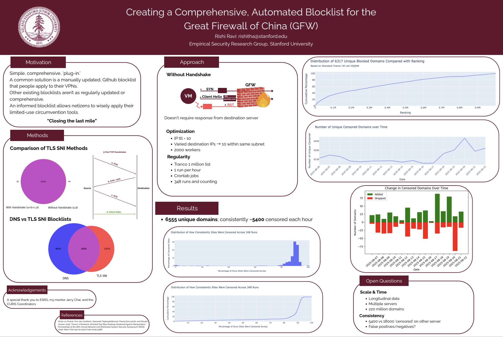

Censorship Research

In the Stanford Computer Science Summer Undergraduate research program, I investigated Chinese censorship of website domains over the course of several months. I used network analysis techniques, like investigating packets and writing and fine-tuning tests that sent packets using several different network protocols. Using multiple remote servers in both the U.S. and China, I helped run partial website requests to see what websites came up as blocked, for the purposes of an open-source block-list. I learned a lot about the research process, both in terms of improving our testing, but also about very real limitations, like how much time it took to run some tests, as well as lack of available servers. Ultimately, through my research, I was able to help observe changes in censorship, including an increase of anti-measurement defenses. Along the way, I picked up a grasp of golang and linux, and kept sharpening my python.
